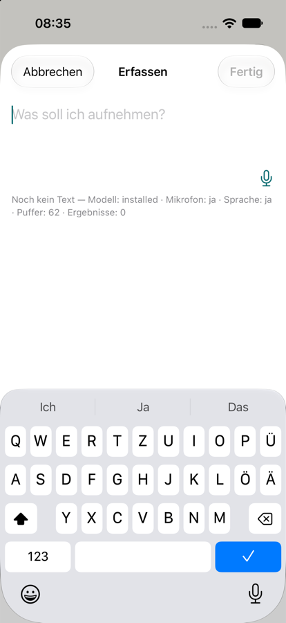
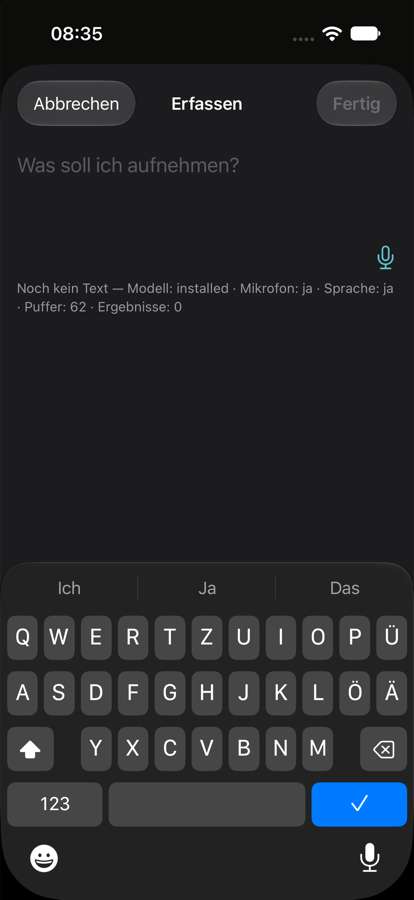

Heute
Punkte und Mikrofon


Bildschirmfotos aus dem Simulator (ohne Mikrofon, deshalb ohne Ausschläge). Die Zeile darüber spielt den heutigen Pegel mit dem nachgebildeten Signal ab.
Bis das erste Wort erscheint, vergehen 1,5 bis 2 Sekunden. In dieser Zeit müssen Pegel und Mikrofon zeigen, dass die Aufnahme läuft. Unten steht der heutige Stand neben drei Entwürfen. C ist dein Vorschlag vom 10.10. und meine Empfehlung, jeweils hell und dunkel. Die Ausschläge laufen mit einem nachgebildeten Sprachsignal, das für alle drei gleich ist.
AVAudioSession.Mode).| Lautstärke am Mikrofon | dBFS | Balken heute | Balken Entwurf |
|---|
Die Dezibelwerte sind übliche Werte ohne automatische Verstärkung. Gemessen an deinem iPhone sind sie noch nicht. Die neue Skala bildet −50 bis −10 dBFS auf die volle Höhe ab, wie in gängigen Pegelanzeigen (Kodeco, AVAudioEngine-Tutorial). Ruhe bleibt flach, normale Sprache füllt die halbe Höhe, laute Sprache fast die ganze.


Bildschirmfotos aus dem Simulator (ohne Mikrofon, deshalb ohne Ausschläge). Die Zeile darüber spielt den heutigen Pegel mit dem nachgebildeten Signal ab.
Pegel in Dezibel. Eine graue Grundlinie steht über die ganze Breite, sobald die Szene offen ist, und die Ausschläge laufen von rechts hinein. Beim Zuhören ist das Mikrofon ein gefüllter Kreis in der Akzentfarbe, ein Ring darum wächst mit der Lautstärke. Ist es aus, wird der Kreis grau umrandet, das Symbol durchgestrichen und die Linie grau. Der Knopf bleibt ein Knopf, die Akzentfarbe ist damit im Farbbudget erlaubt.
Sobald das Mikrofon zuhört, steht im Textfeld statt „Was soll ich aufnehmen?“ grau „Ich höre“ mit drei Punkten, die nacheinander aufleuchten. Mit dem ersten erkannten Wort verschwindet es, der Text steht an derselben Stelle. Hört das Mikrofon nicht zu, kommt die gewohnte Frage zurück. Dazu der deutlichere Pegel in Dezibel mit grauer Grundlinie, das Mikrofon bleibt wie heute. Grau, weil der Hinweis nicht tippbar ist (Farbbudget). Bei „Bewegung reduzieren“ stehen die Punkte still. Die Vorschau spielt den Ablauf in Schleife: 2 Sekunden warten, dann kommen die Wörter.
Gleiche Dezibel-Skala und Grundlinie, das Mikrofon bleibt das heutige Symbol. Über der Linie steht ein Wort: „Hört zu“ in Akzentfarbe, sonst grau „Pausiert“. Das ist am eindeutigsten zu lesen, kostet aber eine Zeile Höhe und Text, den VoiceOver ohnehin schon sagt.